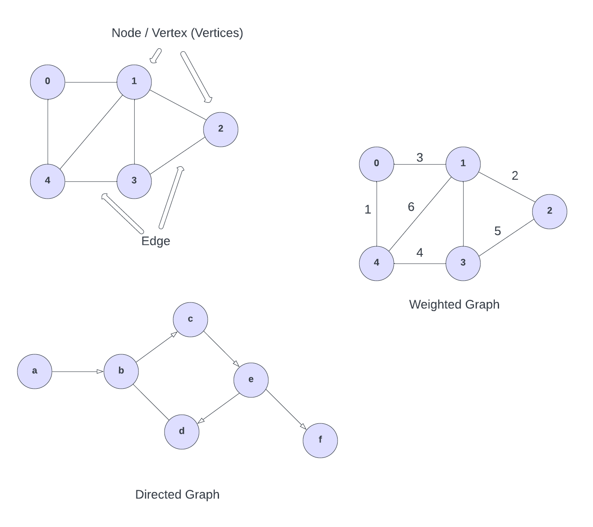
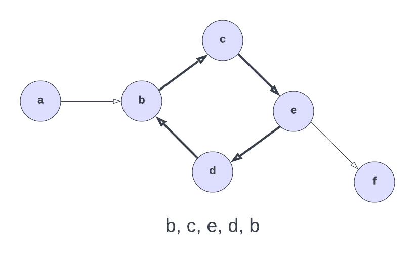

Graph
A graph is a versatile data structure that is similar to a tree. It consists of nodes (also called vertices) and edges (also called links). Each node represents an entity, and each edge represents a connection or relationship between two nodes. Graphs are used to represent many real-world applications: social networks, maps, routing algorithms, and more.
You may hear the phrase "graph theory" in computer science. Graph theory is the study of graphs and their properties. It's a vast field of study with many applications in computer science and other fields.
Visual Representation of a Graph
Here is a visual representation of a few graphs:

The circles represent nodes, also called vertex or vertices (plural) and the lines connecting the nodes represent edges. If you think of a social network, you can think of the users as nodes and the connections or friendships between users as edges.
Types of Graphs
Graphs can be categorized into several types based on their properties:
-
Undirected Graph: In an undirected graph, the edges have no direction. If there is an edge between node A and node B, it implies a connection between both nodes in both directions. The top one is an undirected graph.
-
Directed Graph (Digraph): In a directed graph, each edge has a specific direction. An edge from node A to node B indicates a one-way connection from A to B. The bottom one is a directed graph.
-
Weighted Graph: In a weighted graph, each edge has a weight or cost associated with it. These weights represent the strength of the relationship or the distance between nodes.
-
Cyclic Graph: A cyclic graph contains at least one cycle, which means there is a closed path in the graph. (See below for an example.)
-
Acyclic Graph: An acyclic graph is a graph that does not contain any cycles.
-
Connected Graph: A connected graph is one where there is a path between any two nodes. In other words, every node in the graph can be reached from any other node.
-
Disconnected Graph: A disconnected graph is one that consists of two or more separate subgraphs, and there is no path between nodes in different subgraphs.
Graph cycles
A cycle is a closed path in a graph. In other words, a cycle is a path that starts and ends at the same node. Here is an example of a cycle in a graph:

A cycle starts and ends at the same node. In this example, the cycle is b -> c -> e -> d -> b. The cycle can be of any length, and it can contain any number of nodes.
So that is the gist of a graph. In the next lesson, we will learn about 2 ways to represent a graph and those are an adjacency matrix and adjacency list.